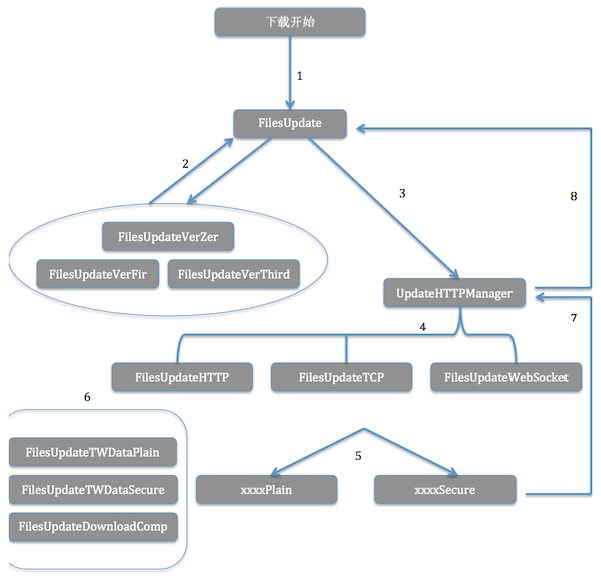

| 版本号 | 日期 | 作者 | 描述 |
|---|---|---|---|
| V1.0 | 2015.12.11 | 药新东 | 初稿 |
| V1.1 | 2015.12.16 | 药新东 | 添加透传参数 |

1、 下载开始，由FilesUpdate和它的子类处理下载前的准备。不同的子类处理不同离线版本的逻辑。
2、 不同版本的下载调用FilesUpdate的统一下载接口进行下载，下面3个接口为只有一个downloadPath（下载路径）参数：：
必选资源下载
-(void)downloadSingleResourceWithPath:(NSString * downloadPat;
可选资源下载
-(void)optDownloadSingleResourceWithPath:(NSString*)downloadPath;
确保更新下载
-(NSData *)ensureDownloadSingleResourceWithPath:(NSString *)downloadPath;
由于在离线3版本后多了个appName的参数，这三个接口可能满足不了需求，所以添加了3个新的接口，info中用 DL_APP_NAME key值存放 NSString的appName，如果不需要，传nil即可，然后调用以下接口：
必选资源下载
-(void)downloadSingleResourceWithPath:(NSString *)downloadPath info:(NSDictionary *)info;
可选资源下载
-(void)optDownloadSingleResourceWithPath:(NSString *)downloadPath info:(NSDictionary *)info;
确保更新下载
-(NSData *)ensureDownloadSingleResourceWithPath:(NSString *)downloadPath info:(NSDictionary *)info;
3、现在的下载逻辑为上面几个下载接口中调用 UpdateHTTPManager单例的几个下载方法来实现下载，appName为可选传值，其他为必需传的值。新添加了seep的透传参数，它是id类型，会在回调中返回。
异步下载方法
-(void)asyncDownloadFileWith:(NSDictionary*)info andSeep:(id)seep;
同步下载方法
-(NSData *)syncDownloadFileWith:(NSDictionary*)info andSeep:(id)seep;
info的内容包括以下的key （需要时可扩展）
DL_FILE_PATH @"filePath" //下载路径 NSString
DL_OPTIONAL @"optional" //可选资源标记 BOOL值
DL_PERSISTENT @"persistent" //是否连续下载 BOOL值
DL_APP_NAME @"appName" //appName NSString
4、UpdateHTTPManager 首先会取出info中的参数，根据离线的版本号和 optional 拼接下载的路径，然后根据优先级的高低选择下载的方式，在离线4的版本中下载的优先级顺序为：WebSocket > TCP > HTTP 选择方式为判断服务器返回json字段中是否有对应的值，w字段对应WebSocket的host，有值就采用websocket连接下载；p字段对应TCP的port，该字段有值且w字段没值时采用TCP下载；俩个字段都没值时采用HTTP下载。
每种下载方式都由对应的同步和异步俩个下载方法。例如WebSocket
异步下载数据 参数对应info的值
-(void)asyncDownloadSingleResourceWebSocketWithPath:(NSString *)filePath optional:(BOOL)optional persistent:(BOOL)persistent andSeep:(id)seep;
同步下载数据
-(NSData *)syncDownloadSingleResourceWebSocketWithPath:(NSString *)filePath andSeep:(id)seep;
5、 三种下载方式都会根据服务器返回json中st字段的值选择不同的加解密方式。这里用实现俩个不同子类的方式，分别处理明文和加密俩种不同的逻辑。以websocket为例：
st字段为 0，3时，采用明文传输，这是会构建FilesUpdateWebSocketPlain对象，为1，2时采用加密传输，构建FilesUpdateWebSocketSecure对象，这俩个类都继承自FilesUpdateWebSocket，重写了接收到数据处理和拼接的方法。
FilesUpdateWebSocket 实现 EMPWebSocketDelegate的代理方法，处理连接成功、失败、关闭和接收到数据时的逻辑。
EMPWebSocket类主要用来和服务器机简历websocket连接，发送数据、接收服务器返回数据发送给代理等。
6、FilesUpdateTWDataPlain 类和 FilesUpdateTWDataSecure 类分别提供了2个方法来处理上送数据和就受到数据的处理，区别为FilesUpdateTWDataPlain是明文处理，FilesUpdateTWDataSecure为加密处理。
path 为资源文件下载路径 接口处理
+(NSData *)dealWithUploadServerData:(NSString *)path;
处理服务器返回的资源数据
+(NSData *)dealWithDownloadServerData:(NSData *)data;
FilesUpdateDownloadComplete类是接受到数据后一些公用方法的提取。
7、 FilesUpdateWebSocket根据代理回调接收服务器返回的数据，根据协议解析出有效信息，拼接数据，根据服务器返回的数据长度，来判断文件是否接收完毕，并且提供了下载结果的回调方法，供外部使用：
FilesUpdateWebSocket 提供了WebSocketDownloadDelegate代理方法：
下载完成的回调，主要将下载的data和下载前传进来的参数返回，供外部使用
-(void)WebSocketDownLoadFinishWithData:(NSData *)data fileName:(NSString *)fileName optional:(BOOL)optional persistent:(BOOL)persistent andSeep:(id)seep;
websocket协议阻塞时的回调，会将必要的参数返回，供外部使用
-(void)WebSocketDownLoadBlockingWithOptional:(BOOL)opt withPath:(NSString *)path andAppName:(NSString *)appName andSeep:(id)seep;
websocket下载进度的回调，会返回每次下载到的数据模型EMPDownloadSpeedModel 主要有下载路径，文件总长度，已下载的长度，需要时可以扩展
-(void)WebSocketDownloadSpeedProgressWithSpeedModel:(EMPDownloadSpeedModel *)speedModel andSeep:(id)seep;
8、 现在由UpdateHTTPManager 实现3种下载方式所有的回调方法，再将所有内容转发给他自己的代理。FilesUpdate实现，统一处理下载返回。
/**
* 下载管理器返回下载完成的函数
* @ data 返回的内容
* @ fileName 下载路径
* @ optional 是否是可选资源
* @ persistent 是否连续下载
* @ seep 透传的值
*/
-(void)UpdateManagerDownLoadFinishWithData:(NSData *)data fileName:(NSString *)fileName optional:(BOOL)optional persistent:(BOOL)persistent andSeep:(id)seep;
/**
* 下载管理器返回HTTP下载失败的方法，目前只有HTTP协议下载失败的时候返回
* @ fileDownloadPath 下载路径
* @ optional 是否是可选资源
* @ persistent 是否连续下载
* @ seep 透传的值
*/
-(void)UpdateManagerDownLoadFailedWithPath:(NSString *)fileDownloadPath optional:(BOOL)optional persistent:(BOOL)persistent andSeep:(id)seep;
/**
* TCP协议切换的回调
* @ opt 是否是可选资源
* @ path 下载路径
* @ appName 对应的appName
* @ seep 透传的值
*/
-(void)UpdateManagerDownLoadTCPBlockingWithOptional:(BOOL)opt withPath:(NSString *)path andAppName:(NSString *)appName andSeep:(id)seep;
/**
* WebSocket协议切换的回调
* @ opt 是否是可选资源
* @ path 下载路径
* @ appName 对应的appName
* @ seep 透传的值
*/
-(void)UpdateManagerDownLoadWebSocketBlockingWithOptional:(BOOL)opt withPath:(NSString *)path andAppName:(NSString *)appName andSeep:(id)seep;
/**
* 下载进度的回调
* @ speedModel 下载进度的模型
* @ seep 透传的值
*/
-(void)UpdateManagerDownLoadSpeedProgressWithSpeedModel:(EMPDownloadSpeedModel *)speedModel andSeep:(id)seep;